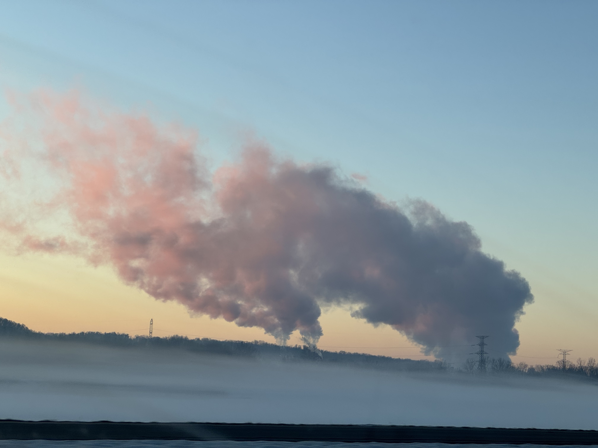

The moon in my backyard the other day. Since it wouldn't photograph at all I took some reference pictures and a little sketch with notes ("moon= big, yellow"). Also the first piece I made on procreate! Finally learning new software after complaining about photoshop for eons.
It's been blisteringly cold lately but this is the first year I've been in Bloomington where the snow has stayed on the ground for more than a day. I love midwest winter; I love the big trees here against the clear winter sky. Michael visited last weekend and he took this picture out of the window as we were driving back from the airport at sunrise.

We went roller skating and to the movies (Sonic 3 and One of Them Days, both of which I would definitely recommend). After he went back to CA, I've been hunkered down in my warm apartment trying to write my dissertation proposal and two book chapters and a paper which all would have been great to have drafted about a month ago. That's the update! I am not doing awesome on my "every Saturday blog post" resolution yet but three weeks late is better than never.
<3, Monica